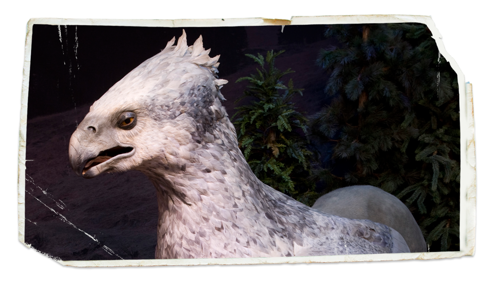
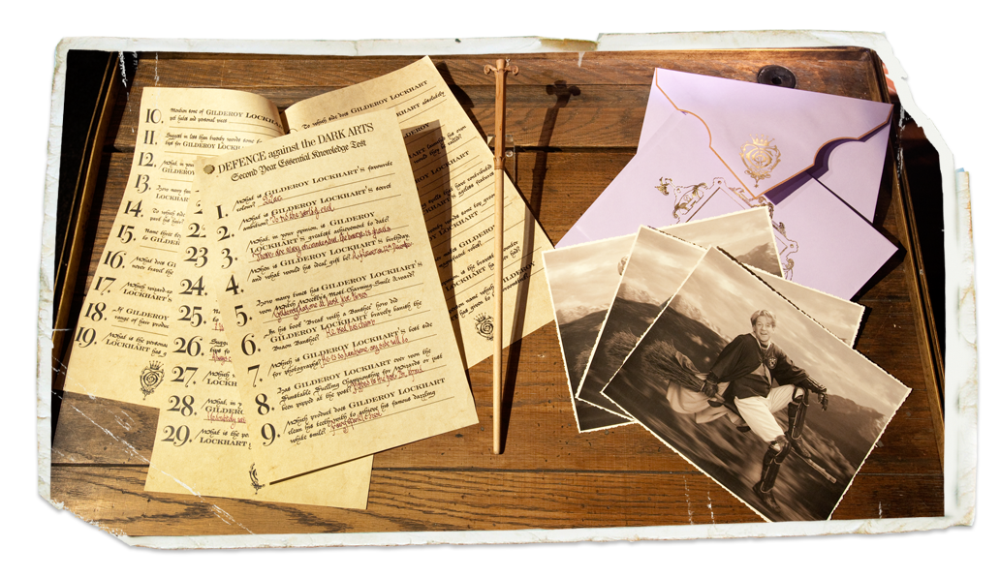
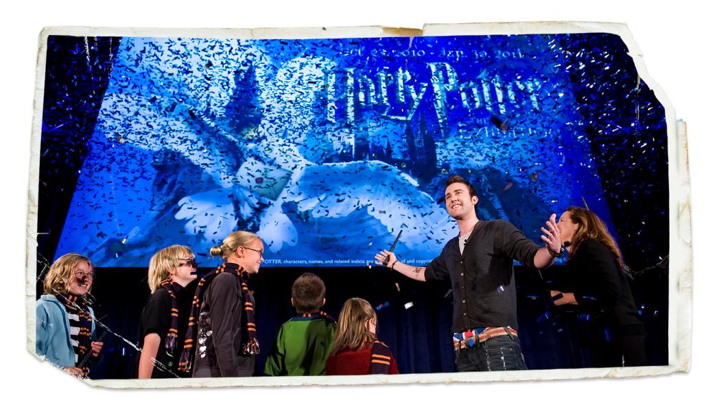

Swimming Squirrel
Tourists see unususal swimmer.
- level:
- Pre-Intermediate
- accent:
 US (man)
US (man)
- category:
- Read and Listen
- Pre-reading
-
What do you think you could see at a Harry Potter exhibition?



- Reading I
- Read the article to check your ideas.
Swimming Squirrel
Tourists see unususal swimmer.
Tourists on a boat in the north of England had a big shock. They were in the middle of a lake. All of a sudden, they saw a squirrel swimming. This is very strange because it is difficult for most mammals to swim. Also, squirrels are very small, so it is even more difficult for them. The squirrel had swum 274 meters from the side of the lake to the middle. It was eventually rescued by the captain of the boat. The squirrel was taken back to shore. “We don’t know what the squirrel was doing,” said Captain Edward McGregor. Once back on land, the squirrel disappeared quickly. ★
- Reading II
- True or False?